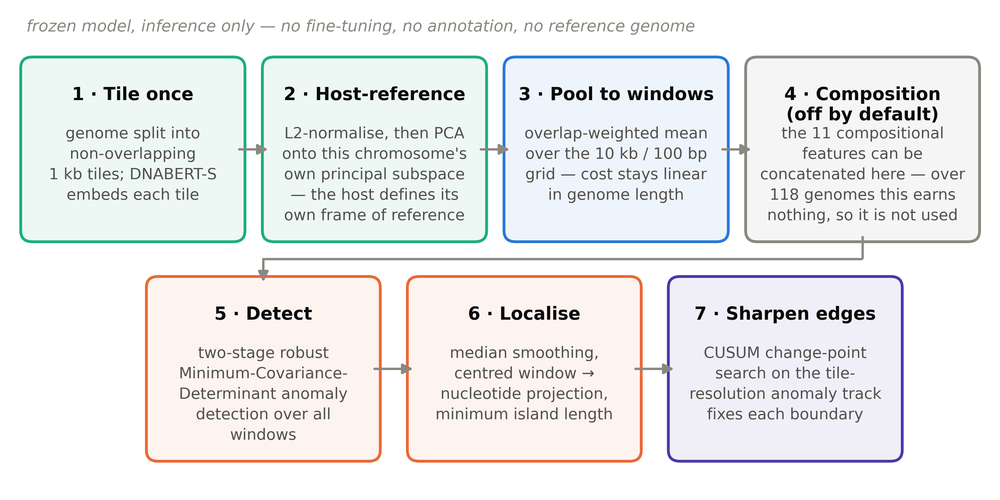
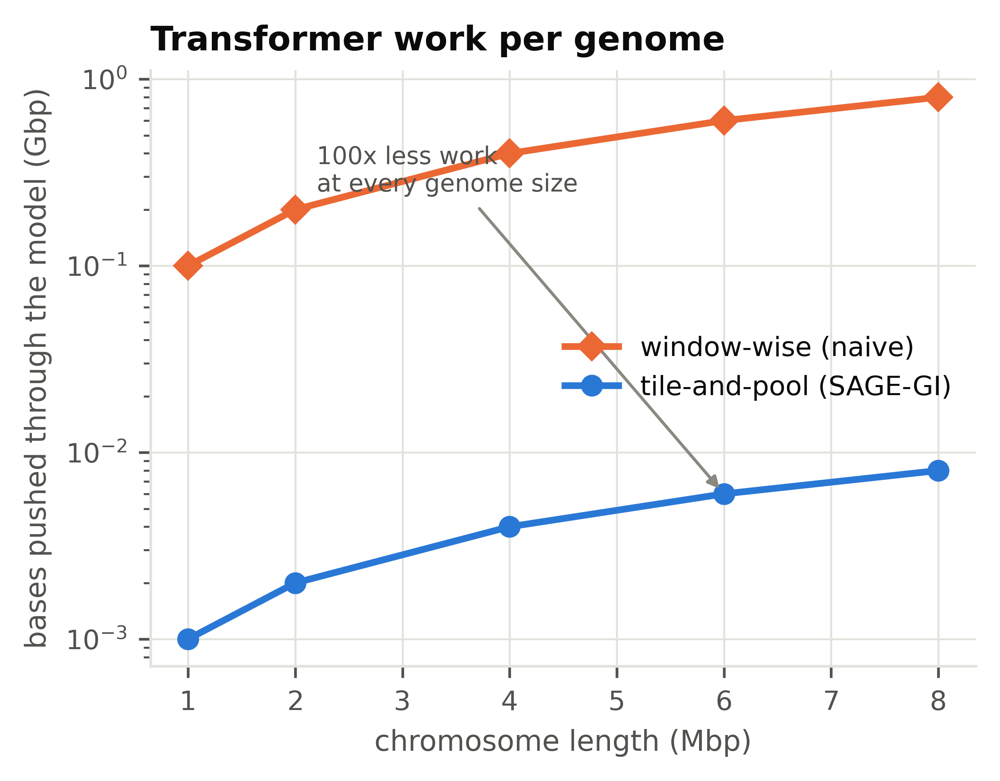
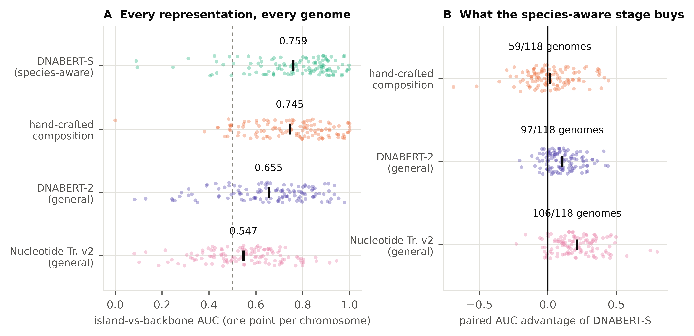

Genomic islands from one unannotated chromosome — using a model that already knows what a species looks like.
SAGE-GI detects horizontally acquired DNA in bacterial genomes with frozen embeddings from DNABERT-S, a genome foundation model trained so that sequences from different species separate in embedding space. No annotation, no reference genome, no training on your organism.
Why this problem is still open
Genomic islands carry a disproportionate share of antibiotic-resistance and virulence genes. Finding them in a genome nobody has annotated is the case that matters — and the hardest one.
Comparative methods need relatives
IslandPick and the ensembles built on it align a query against several close relatives. That is accurate, but it presupposes those relatives have already been sequenced. For a newly sequenced or taxonomically isolated organism, they simply do not apply.
Composition-based methods are all hand-designed
GC skew, dinucleotide bias, codon usage, tetranucleotide frequency. Effective, but no pretrained knowledge of what bacterial DNA looks like enters the pipeline anywhere.
DNABERT-S is trained on exactly this signal
Its contrastive objective exists to make sequences from different species separate. A genomic island is, by definition, DNA that came from a different species — yet the model had only ever been used across genomes, for metagenomic binning.
Three obstacles, three fixes
Plugging a transformer into a sliding-window scanner does not work. Making it work is the contribution.
100× redundant compute
A 10 kb window stepped every 100 bp means every base is seen ~100 times. Embedding each window separately would push 50 billion bases through the model for this benchmark — hundreds of GPU-hours.
Embed once, pool in closed form
Embed non-overlapping 1 kb tiles once, then reconstruct any window as the overlap-weighted mean of the tiles it covers. Cost becomes linear in genome length; the 100 bp window grid is preserved exactly. Verified against brute force to 3×10−8.
768 dimensions is too many
A robust covariance estimate in 768 dimensions is neither well-conditioned nor computationally sensible, and most embedding directions carry no within-genome variation at all.
Let the host define the frame
L2-normalise, then project onto the leading principal directions of the chromosome being analysed. We also tried subtracting a long-wavelength positional trend to remove replichore structure — measured across 118 genomes it costs 6.9 F1, and we report that as a negative result rather than quietly dropping it.
F1 hides where the edges are
A prediction can overlap an island generously while placing both edges tens of kilobases away. Window scanners that credit each window to its leading bases inherit a systematic left shift of about half a window — invisible to every metric the field reports.
Put the edge where the signal steps
Project windows to their centres, then place each boundary at the maximiser of a normalised mean-shift statistic on the tile-resolution anomaly track. We report the boundary error explicitly, signed and unsigned.


Results
IslandPick benchmark, evaluated under its original protocol: only the curated island and backbone regions count, and metrics are averaged over genomes rather than pooled nucleotides.
| Method | Precision % | Recall % | F1 % | Boundary err. kb |
|---|---|---|---|---|
| SAGE-GI | 58.6 | 73.1 | 60.3 | 18.1 |
| SAGE-GI + composition (ablation) | 58.4 | 72.5 | 59.6 | 18.0 |
| hand-crafted composition (11 features) | 55.2 | 68.5 | 56.4 | — |
| SSG-LUGIA-F (published) | 55.1 | 65.2 | 55.2 | 18.8 |
| DNABERT-2 embedding alone | 47.2 | 62.1 | 48.5 | 15.7 |
| AlienHunter | 38.6 | 81.1 | 46.1 | — |
| IslandPath-DINUC | 45.7 | 57.4 | 45.7 | — |
| Nucleotide Transformer v2 alone | 43.4 | 54.0 | 43.2 | — |
| SIGI-HMM | 75.8 | 32.8 | 42.0 | — |
| IslandPath-DIMOB | 64.3 | 36.2 | 41.5 | — |
SAGE-GI improves F1 by +5.2 points over the published state of the art (paired Wilcoxon p = 8.6×10⁻⁵, better on 76 of 118 genomes) — and improves precision and recall at the same time, which the precision/recall trade-off in this field usually forbids. Adding the compositional block on top changes F1 by −0.7 (p = 0.18), so it is not part of the method. Rows without a boundary error are quoted from Additional File 6 of Langille et al. (2008), which did not report island coordinates.
Which representation carries the signal?
Measured without any detector: how well does each representation rank curated island tiles above curated backbone tiles? (Mann–Whitney AUC, all 118 chromosomes.)
| Representation | AUC | Contrast |
|---|---|---|
| DNABERT-S (species-aware) | 0.759 | 1.17 |
| hand-crafted composition (11 features) | 0.745 | 1.87 |
| DNABERT-2 (general-purpose) | 0.655 | 1.09 |
| Nucleotide Transformer v2 (general-purpose) | 0.547 | 1.03 |

Species-awareness is the active ingredient
DNABERT-S beats DNABERT-2 by +0.105 AUC (p = 8.2×10⁻¹⁴, better on 97/118 genomes). The two share architecture, size, tokenizer and training corpus — they differ only in the species-aware contrastive stage. A third model from a different family, Nucleotide Transformer v2, lands at 0.547 — barely above chance, and 0.212 AUC below DNABERT-S (p = 7.6×10⁻¹⁹, 106/118). Two independent general-purpose genomic models both fall below hand-crafted composition; only the species-aware one beats it.
A frozen model matches two decades of hand-tuning
DNABERT-S and the classical compositional statistics are statistically indistinguishable (p = 0.49). Meanwhile the general-purpose DNABERT-2 is worse than composition — a genomic foundation model is not automatically a better feature extractor.
A supervised competitor returns nothing on unfamiliar genomes
TreasureIsland posts a higher raw F1, but its classifier is supervised and trained on a compilation containing this benchmark. On the 107 chromosomes its own similarity check recognises it scores 82.9; on the 11 it does not, it returns no predictions at all. SAGE-GI scores 59.7 and 66.3 on those same subsets — which is the whole point of not needing a training set.
Fusing them earns nothing
Composition separates by magnitude (contrast 1.87), the embedding by rank (1.17), and we expected that to compound. It does not: across 118 genomes at three operating points, adding composition to the embedding never helps, and at the recall-oriented point it hurts (−1.1 F1, p = 2×10⁻⁴). SAGE-GI is the embedding alone.
Run it on your genome
One FASTA file in, island coordinates out.
from sagegi.genome import read_fasta, encode
from sagegi.features import extract_features
from sagegi.embed import EmbedConfig, embed_genome
from sagegi.sage import SageConfig, run_sage_gi
seq = read_fasta("my_genome.fna")
comp = extract_features(encode(seq), dict(w=10000, dw=100, karlin_mode="normalized",
pca_dn=2, pca_amino_acid=2, pca_kmer4=2,
entropy_features=True))
emb, _ = embed_genome(seq, EmbedConfig(model_path="zhihan1996/DNABERT-S", tile=1000))
res = run_sage_gi(len(seq), SageConfig(), emb=emb, tile=1000,
comp_X=comp.X, comp_starts=comp.starts)
for start, end in res.islands:
print(f"{start+1}\t{end+1}\t{end-start+1} bp")Embedding runs on CPU or GPU. On a GPU a 5 Mbp chromosome takes well under a minute; on a laptop CPU, about 45 minutes.
Reproduce the study
Every stage is resumable — re-running skips work already on disk.
-
Rebuild the benchmark
Fetches the IslandPick additional files from the publisher and parses them into tidy CSVs: 771 curated islands, 3,700 backbone regions and the per-genome confusion matrices of six published tools.
python scripts/00_prepare_benchmarks.py -
Fetch the genomes
118 IslandPick chromosomes plus three case-study genomes, from NCBI Entrez (~500 MB).
python scripts/01_download_genomes.py -
Run the compositional baseline
A faithful, vectorised re-implementation of SSG-LUGIA in its precision-, balance- and recall-oriented variants.
python scripts/02_run_ssg_lugia.py --workers 3 -
Extract tile embeddings (the only GPU step)
The notebook downloads the models and genomes itself and embeds all 121 chromosomes with both DNABERT-S and DNABERT-2 inside a single free Colab session.
notebooks/01_extract_embeddings_gpu.ipynb -
Run SAGE-GI and every ablation
python scripts/04_run_sage_gi.py --configs configs/methods.json python scripts/05_tune_cv.py --channel sage python scripts/06_synthetic.py -
Rebuild figures and paper tables
Every number in the manuscript is generated here, so the text cannot drift from the data.
python scripts/90_make_figures.py && python scripts/91_make_tables.py
Data, code and citation
Benchmark
IslandPick — Langille, Hsiao & Brinkman, BMC Bioinformatics 2008;9:329,
Additional Files 2, 4 and 6. Redistributed as tidy CSVs in data/benchmarks/.
Models
zhihan1996/DNABERT-S and zhihan1996/DNABERT-2-117M, used frozen
at inference time. Apache-2.0.
Baseline
SSG-LUGIA — Ibtehaz et al., Briefings in Bioinformatics 2021;22:bbab116. Re-implemented faithfully here.
@article{oman2026sagegi,
title = {SAGE-GI: species-aware genomic language model embeddings sharpen
unsupervised genomic island detection and boundary resolution},
author = {Oman, Saimoon Al Farshi and Bayzid, Md. Shamsuzzoha},
journal = {Briefings in Bioinformatics},
year = {2026}
}